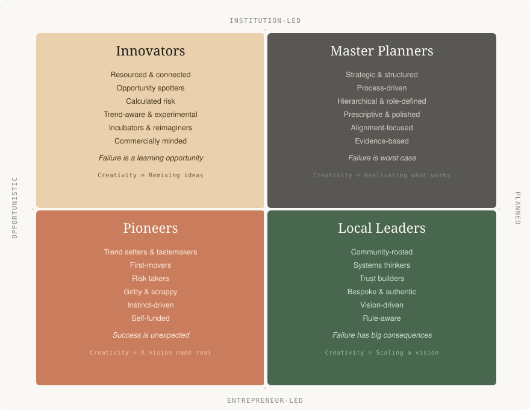

Access is something few people think about—until they have no access at all. I certainly didn’t, not until I found myself stranded on a beach at the Great Lakes.
It was a perfect summer day in a town called Grand Bend. The kind of place that comes alive in warm weather—until the sheer number of visitors brings everything to a standstill. Every parking lot and patch of pavement had been claimed. A hand-painted sign on someone’s front lawn read “Parking $100”, and sure enough, an SUV sat in the spot.
That’s when it hit me: this place didn’t need more parking—it needed a beach bus.
The honest truth? Beach Bus scratched my own itch. I wanted to go to the beach, have a drink at the bars, and not worry about driving home.
So the next summer, my team and I stood in that same parking lot, slipping bright yellow flyers under windshield wipers. They were designed to look just like parking tickets, but instead of a fine, they delivered a message: “Bet you wish you’d taken the bus.”
I was scrappy. Embarrassingly so. At the time, I was working a full-time job while trying to get Beach Bus off the ground. On my first day at my corporate job, the IT guy handed me a brand-new iPhone. “It’s got unlimited data,” he said.
I put it to the test, streaming hours of YouTube without ever connecting to Wi-Fi. Not a single warning. That’s when I got an idea. I logged into the Beach Bus social media account and proudly announced: “We now have free Wi-Fi on all trips.”
On the next trip, I turned on my company phone’s hotspot and let the passengers connect. My phone overheated. It felt like it might catch fire. But it mostly worked. So I did it again. And again. All summer long, I ran “free Wi-Fi” off a phone that wasn’t even mine.
Eventually, my conscience caught up with me. But by then, the bus was rolling and the bookings were growing. You prove the concept with your own hands, and eventually, the system catches up. Beach Bus became the instinct that eventually led to Parkbus, which now takes thousands of travellers to national and provincial parks across Canada.
As Parkbus grew, this is when I started working directly with Destination Marketing Organizations (DMOs). I began to really understand what they do, and I found my place in the broader ecosystem of creating destinations.
But through that work, I also realized a fundamental truth: my scrappy, rule-bending energy wasn’t enough on its own. I saw that there were three other distinct types of stakeholders needed to make a destination truly successful. Most destination managers focus on one or two of these groups and wonder why things stall. The destinations that break through—Fogo Island, Prince Edward County, Bilbao—got all four working together, whether they planned to or not.
Here is the framework for identifying who’s who in your community, what each group needs, and what happens when one is missing.

01
Pioneers
Who they are: The people who build the future of your destination before anyone asks them to. They create new experiences, solve their own problems, and invent products that don’t exist yet—not because they see a market opportunity, but because they have an itch they need to scratch.
Their defining trait: They act before the market is ready. They’re building tomorrow’s tourism product today, often with duct tape and audacity.
How to spot them: Pioneers are already doing interesting things in your community—usually outside your strategic plan. They’re the chef running pop-up dinners in a barn. The kayak guide who built her own booking system because nothing on the market worked.
MIT researcher Eric von Hippel coined the term “lead user” to describe this specific kind of pioneer. His research consistently shows that many of the most successful commercial products were actually invented by users, not producers. In a study of kayak equipment innovators, the reasons for creating something new broke down like this:
- Personal need for the innovation: 55%
- Enjoyment of creating it: 21%
- Desire to help others: 12%
- Learning from creating it: 7%
- Profit: just 2%
This matters for DMOs because it means pioneers aren’t motivated by the same incentives you might assume. They don’t need grant programs or marketing support as their first priority. They need someone to notice what they’re doing and take it seriously.
What they need from you:
- Recognition, not direction: Watch what they’re building and ask: could this be the future of our destination?
- Small, fast support: Quick-turnaround micro-funding, permits, introductions. Remove friction from their path.
- A seat at the table: Invite them into your planning process to challenge your strategy with what they’re seeing on the ground.
02
Local Leaders
Who they are: The community figures who provide visible, trusted leadership that makes transformation feel safe. They’re not necessarily building tourism products—they’re creating the conditions under which tourism can thrive without tearing the community apart.
Their defining trait: Legitimacy. When a Local Leader supports an initiative, the community follows. They bridge the gap between outside ambition and local trust.
In Geoffrey Moore’s technology adoption framework, Crossing the Chasm, visionaries (pioneers) get excited about breakthrough possibilities. But the mainstream majority wants proof that something is safe and endorsed by people they trust. Local Leaders are the bridge across that chasm.
Zita Cobb is the defining example of a Local Leader. An eighth-generation Fogo Islander, she left for a successful career, then returned home to found Shorefast. What makes Cobb a Local Leader rather than a pioneer is how she built Fogo Island Inn. She didn’t impose a vision from outside; she started community-wide conversations. The result: Fogo Island Inn earned three Michelin Keys, families are choosing to live on the island again, and the local economy has been revitalized.
What they need from you:
- Partnership, not management: Your strategic plan should reflect their vision for the community, not the other way around.
- Data and context: Equip them with the visitor data and economic impact numbers that help them make the case to the broader community.
- Protection from scale creep: When outside developers push for more volume, Local Leaders need DMOs who will back them up on right-sizing.
03
Innovators
Who they are: The people who take what pioneers have proven and turn it into a commercially viable, repeatable tourism product.
Their defining trait: They see the commercial potential in what pioneers have built and have the operational skill to scale it. It is crucial to understand that Innovators aren’t just copycats stealing ideas from scrappy locals. They bring capital, operational rigor, and market access. They absorb the financial risk of taking a niche idea and making it scalable.
Prince Edward County already had pioneers: winemakers who planted vines when nobody was paying attention and small B&B owners who saw potential. Jeff Stober and Drake Hotel Properties saw what those pioneers had created and built something that connected it to a larger market. Drake Devonshire took a tired bed and breakfast and transformed it into a 13-room boutique inn that brought Toronto’s urban audience to a place most had never visited. Innovators don’t create the destination’s identity—they create the product that makes the identity accessible to a wider audience.
What they need from you:
- Market intelligence: Innovators are making commercial bets. They need visitor data, trend analysis, and competitive context.
- Streamlined regulatory paths: DMOs can advocate with municipal governments to create faster, clearer paths for tourism-related development.
- Connection to pioneers: The pioneer’s instinct plus the Innovator’s business acumen is where breakthrough tourism products come from.
04
Master Planners
Who they are: The institutional leaders—typically DMOs, municipal planners, economic development officers, and government agencies—who create the strategic framework, infrastructure, and coordination that allows everything else to work.
Their defining trait: They think in systems. While pioneers create, Local Leaders legitimize, and Innovators commercialize, Master Planners ensure the whole ecosystem is connected, sustainable, and moving in a coherent direction.
Every Master Planner knows the myth of Bilbao: build a spectacular Guggenheim Museum, and tourism transforms the economy. It’s seductive, but dangerous. The reality is that Bilbao’s success depended on comprehensive, coordinated planning that connected infrastructure (a new metro system, a new airport), placemaking, and cultural investment. The “just add art” approach rarely works on its own.
Most destinations don’t need a $100 million flagship. They need a Master Planner who can identify the pioneers, connect them with Innovators, secure the endorsement of Local Leaders, and build the supporting infrastructure.
What great Master Planners actually do:
- Scout for pioneers: They spend time in their community discovering what’s emerging—not at their desk writing reports.
- Convene the four types: They bring pioneers, Local Leaders, and Innovators into the same room and create the context for collaboration.
- Calibrate the scale of the response: They match the scale of the intervention to the scale of the opportunity.
- Show the data: They measure what matters, present it clearly, and use data to build the case for continued investment.
How the Four Types Work Together
The sequence matters. The pattern is remarkably consistent across the communities that break through:
Pioneers go first. Local Leaders legitimize. Innovators commercialize. Master Planners coordinate.
1. Pioneers go first. They create something new and prove there’s demand.
2. Local Leaders legitimize. Their endorsement turns a fringe experiment into a community project.
3. Innovators commercialize. They take the proven concept and build a scalable product.
4. Master Planners coordinate. They connect the dots and ensure the growth serves the community.
When one is missing, the whole system stalls:
| Missing Type | What Goes Wrong |
|---|---|
| No Pioneers | Nothing new gets created. The destination runs on legacy products. |
| No Local Leaders | Community resists tourism. Pioneer ideas can’t gain mainstream support. |
| No Innovators | Interesting things happen but never reach the market. The destination stays a “hidden gem” forever. |
| No Master Planners | Growth is uncoordinated. Infrastructure lags. Nobody makes the case for investment. |
The DMO leader’s most important job isn’t to be all four types at once. It’s to identify which types are present in their community, which are missing, and how to cultivate or attract the ones that aren’t there yet.
A Diagnostic for Your Destination
Ask yourself:
- Who are my pioneers? Who is already creating new visitor experiences without waiting for permission or funding?
- Who are my Local Leaders? Have I brought them into the conversation as genuine partners?
- Who are my Innovators? Am I connecting them to the pioneers who are generating the raw material?
- Am I being a great Master Planner? Am I spending enough time in the field spotting patterns, or am I stuck at my desk?
The destinations that thrive in the next decade won’t be the ones with the biggest budgets or the flashiest campaigns. They’ll be the ones where all four stakeholders are present, connected, and working in the same direction.
Your job is to make that happen.
Matthew Thomas is the CEO of Parkbus, Canada’s national outdoor experience company, and co-founder of Whereabouts, the CRM built for destination marketing organizations. He has spent over a decade in Canadian tourism and was named Innovator of the Year at the Ontario Tourism Summit.